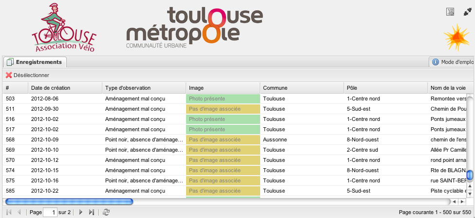
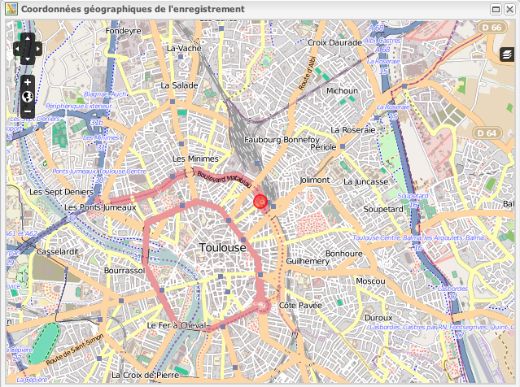
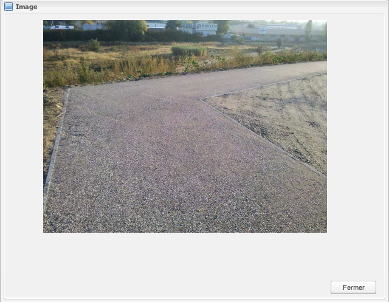

Les enregistrements
L'onglet de gestion des enregistrements permet de gérer toutes les informations relatives à un enregistrement :
- la date de création ;
- les champs d'informations : repère, nom de la voie, description, proposition, observation terrain, type d'observation, réponse de Toulouse Métropole, commentaire final de l'association, réposne du pole ;
- une commune et un pôle ;
- une priorité ;
- un statut ;
- la position géographique ;
- les images éventuelles ;
- l'affichage ;
- la modération ;
- un attribut de transnmission aux pôles ;
- un attribut de traitement par les pôles ;
Un enregistrement est défini par :

- un numéro d'identification - non modifiable ;
- un repère de rue - non modifiable ;
- un nom de voie - non modifiable ;
- une commune - modifiable ;
- un pole - non modifiable ;
- une priorité - non modifiable ;
- une description - non modifiable ;
- une proposition - non modifiable ;
- un observation terrain - non modifiable ;
- un type d'observation - non modifiable ;
- une image - non modifiable.
- des coordonnées géographiques - non modifiable ;
- une date de création - non modifiable ;
- une réponse du pole - modifiable ;
- un attribut de traitement par les pôles - modifiable.
Les poles peuvent modifier le champ 'Réponse du pole' et la case à cocher 'Traité par pole' .
### Il est possible de voir la position géographique de l'enregistrement sur une carte en double-cliquant sur les cellules 'latitude' ou 'longitude' :

### Il est possible de voir l'image éventuelle en double-cliquant sur la cellule du champ 'Image' - ça ouvre une fenêtre contenant l'image :
